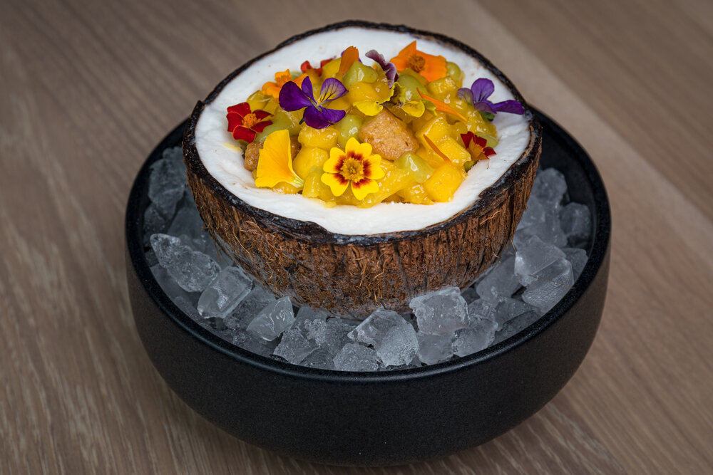

Coconut Sorbet and Vegan, Gluten Free Vanilla Cake with Yuzu and Fresh Mango

Coconut Sorbet
Ingredients
- 1 1/2 cups of water
- 1 1/2 oz of inverted sugar
- 1 1/2 cups of granulated white sugar
- 4oz of dextrose
- 1 tbsp of stabilizer cremodan 64
- 8 cups of coconut milk
- 2 cups of dry, unsweetened coconut
Steps
- First, mix sugar, dextrose and stabilizer.
- Heat up the water and inverted sugar at 122 degrees fahrenheit.
- Then mix in the granulated white sugar, dextrose, and bring it to 185 degrees fahrenheit(don't stop mixing until all 4 ingredients reach 185 degrees fahrenheit).
- Allow this mixture to cool down.
- Next, blend the coconut milk, dry coconut, and the previous mix.
- Strain and cool for 8 hours.
- Turn it on the ice cream machine to the manufactured instructions for Sorbet settings.
- Spin until the machine has come to a full cycle and scoop out coconut sorbet and freeze until ready to use.